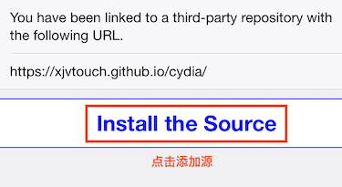
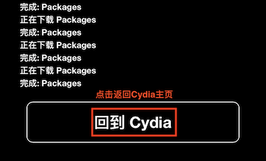
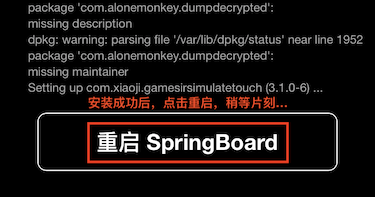
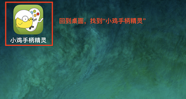
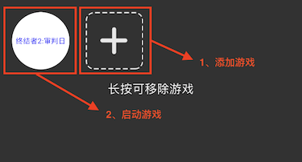

1、点击“通过Cydia安装”👆 - “打开”

2、点击“Install the Source”，等待安装...

3、安装成功后，点击“回到Cydia”

4、回到Cydia主页 - 点击“软件源” - 找到”xjvtouch.github.io"

5、找到“小鸡手柄精灵”，进入安装界面

6、点击“安装” - “确认”，等待安装...

7、安装完成后，点击“重启SpringBoard”

8、设备重启后回到桌面，打开“小鸡手柄精灵”并添加游戏。然后打开游戏，连接手柄等设备，按Home键(电源键)呼出按键映射界面，设置键位。

